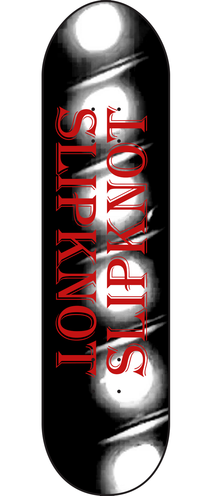

Subjects
During my time at City of City College, I have learned many different skills through doing different subjects within my course. Some of these subjects include moving images, still images, and software skills. Below you can find different examples of my work and what i achieved from doing them.
Moving Images
For our moving images project, we were put into groups and given the task of planning and producing a short film which we would edit later to give it a more cinematic feel. Some skills I picked up from this class include the use of different video editing software such as Davinci Resolve, Planning and writing a script, and storyboarding. I enjoyed this class as it taught me the basic skills of video creation, and I had lots of fun participating in the activities. Below you can watch the short film that me and my group created.
Still Images
For our still images class, we were tasked with creating a website to display edits of photos we had taken, while following a theme. The theme that I had chosen for my project was the theme of entertainment. I took photos of many different forms of entertainment such as bowling, cinemas, casinos, and more. We had to take around 25 photos, and edit at least 15 of them, to display our editing techniques that we had learned. I enjoyed this class as I liked using different editing techniques to add life into the photos that I had taken. Below you can find an example of an image I had edited for the website, which is a photo of boom battle bar.
Software Skills
For our software skills class, we were tasked with taking at least 25 photos of the college architecture, which we would then edit our best photos and use them to create our own skateboard designs. Some skills that I picked up from this class include photography skills, and photo editing skills. I enjoyed this class as it allowed me to be creative with my photography and editing to make cool and unique designs. Below you can see an example of one of my personal favourite skateboard designs.
